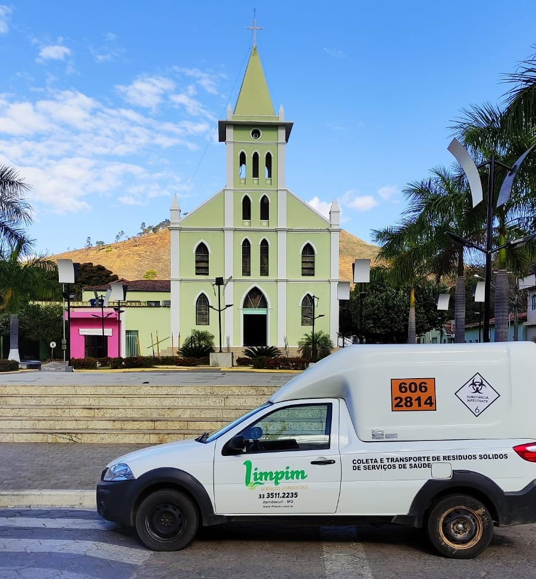

Coleta de Resíduos de Serviços de Saúde
A Limpim Serviços Ambientais é uma empresa licenciada desde o ano de 2017 pela Secretaria de Estado de Meio Ambiente e Desenvolvimento Sustentável –SEMAD, para executar os Serviços de Coleta e Transporte Resíduos de Serviços de Saúde gerados no estado de Minas Gerais, bem como encaminhá-los para o Tratamento e Destinação Final Ambientalmente Adequada, em conformidade com o que está estabelecido pelos órgãos de controle ambiental Federal, Estadual e Municipal.
Diferencial
- Responsabilidade e compromisso Ambiental
- Destinação Final Ambientalmente Adequada dos Resíduos
- Gestão correta dos Resíduos de Serviços de Saúde
- Capacitação dos Geradores na Gestão dos seus Resíduos
- Segurança jurídica junto aos órgãos fiscalizadores.
Serviços
Para atender às exigências ambientais e legais os profissionais da Limpim Serviços Ambientais são rigorosamente selecionados e recebem treinamentos específicos para a execução de cada serviço. A padronização dos processos internos, a uniformização, a identificação e o uso de equipamentos de proteção pelos nossos colaboradores, garantem a segurança e a postura profissional necessários para uma prestação de serviço eficiente e de qualidade.
